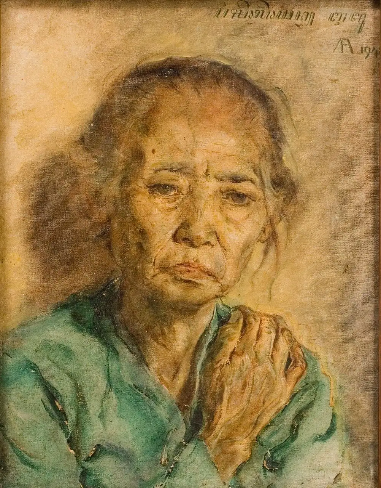

Galeri Nasional Indonesia (GNI)

Profil Galeri Nasional Indonesia
Galeri Nasional Indonesia (GNI) merupakan museum seni rupa modern dan kontemporer Indonesia di bawah naungan Direktorat
Jenderal Kebudayaan, Kementerian Pendidikan, Kebudayaan, Riset, dan Teknologi. GNI berdiri pada 1998 berdasarkan surat
persetujuan Menko Pegawasan Pembangunan dan Pendayagunaan Aparatur Negara No. 34/MK.WASPAN/1998. Dilanjutkan dengan
ketetapan Kepmendikbud No.099a/0/1988, GNI kemudian diresmikan operasionalnya pada 8 Mei 1999 oleh Menteri Pendidikan dan
Kebudayaan yang kala itu dijabat oleh Juwono Sudarsono. Gedung GNI yang berciri khas arsitektural kolonial Belanda ini terletak
di jantung ibu kota, Jalan Medan Merdeka Timur No. 14 Jakarta Pusat (dulu Koningsplein Oost).
Sesuai dengan tugas dan fungsinya, GNI melaksanakan pengkajian, pengumpulan, registrasi, perawatan, pengamanan, pameran dan publikasi
karya seni rupa berupa lukisan, sketsa, grafis, patung, keramik, desain grafis, ilustrasi, fotografi, seni kriya, seni instalasi,
seni media, dan media alternatif lainnya yang dapat dikategorikan sebagai seni rupa modern dan kontemporer. Karya seni yang dikumpulkan
dan dirawat GNI berasal atau terkumpul dari Museum Nasional Indonesia; Direktorat Kesenian, Sekretariat Direktorat Jenderal
Kebudayaan; dan GNI. Karya-karya tersebut merupakan hasil olah artistik seniman Indonesia dan mancanegara, yang terdiri dalam
berbagai ekspresi, bentuk, media, teknik dan latar belakang seniman serta keunggulan karyanya.
Karya seni rupa yang menjadi koleksi GNI/koleksi negara yang merupakan karya para seniman Indonesia dan mancanegara. Para seniman
Indonesia tersebut beberapa di antaranya adalah Raden Saleh, S. Sudjojono, Affandi, Basoeki Abdullah, Hendra Gunawan, Henk Ngantung,
Barli Sasmitawinata, Trubus, Popo Iskandar, H. Widayat, Sudjana Kerton, Srihadi Soedarsono, Jim Supangkat, FX. Harsono, S. Prinka,
Priyanto S., Hildawati Soemantri, Nyoman Gunarsa, Made Wianta, Ida Bagus Made, Lucia Hartini, Iriantine Karnaya, Dolorosa Sinaga,
Semsar Siahaan, I Ketut Soki, I Nyoman Erawan, Dede Eri Supria, Heri Dono, Ivan Sagita, dan perupa potensial lainnya.
Sedangkan para seniman mancanegara beberapa di antaranya adalah Wassily Kandinsky (Rusia), Hans Hartung (Jerman),
Victor Vassarely (Hongaria), Sonia Delauney (Ukraina), Zao Wou Ki (Tiongkok), dan Pierre Soulages (Prancis). Ada juga koleksi GNI
yang merupakan karya perupa asal Sudan, India, Peru, Kuba, Vietnam, dan Myanmar.
Koleksi-koleksi GNI tersebut sebagian dipamerkan secara periodik, baik pada pameran tetap (permanent exhibition) maupun pameran
temporer (temporary exhibition) baik yang digelar di dalam Kawasan GNI maupun di luar GNI. Pameran tetap sebagai bentuk museum
seni rupa ditata secara khusus dengan konsep kuratorial tertentu yang berlangsung relatif lama. Sedangkan pameran temporer
diselenggarakan pada rentang waktu tertentu, baik yang diinisiasi dan dilaksanakan oleh GNI (program utama), maupun hasil kerja
sama dengan studio seniman, komunitas seni, galeri seni rupa, lembaga kebudayaan, kedutaan besar negara asing, maupun institusi lainnya.
Koleksi
CAT MINYAK PADA KAIN : 88 x 58,5 cm
Legenda Jayaparna 1965 - Ketut Soki
 Karya ini merupakan salah satu kecenderungan karya young artist, gelombang perupa muda Bali yang belajar melukis kepada
pelukis Belanda Arie Smit. Dalam gaya ini yang mejadi ciri visual adalah ungkapan dekoratif naif bentukbentuk dan warnanya
cerah dan kaya. Lukisan ini menampilkan sebuah kisah klasik Jayaprana dan Layon Sari yang berada dalam tragedi cinta dan
kesetiaan pada penguasa. Dalam lukisan tampak Layon Sari dalam pelukan Sang Raja, sementara Jayaprana diutus berangkat perang
dan dibunuh dalam pengkhianatan raja. Di langit terlihat Ratih dan Kamanjaya dengan atribut payung kebesarannya menyaksikan
tragedi cinta tersebut
Karya ini merupakan salah satu kecenderungan karya young artist, gelombang perupa muda Bali yang belajar melukis kepada
pelukis Belanda Arie Smit. Dalam gaya ini yang mejadi ciri visual adalah ungkapan dekoratif naif bentukbentuk dan warnanya
cerah dan kaya. Lukisan ini menampilkan sebuah kisah klasik Jayaprana dan Layon Sari yang berada dalam tragedi cinta dan
kesetiaan pada penguasa. Dalam lukisan tampak Layon Sari dalam pelukan Sang Raja, sementara Jayaprana diutus berangkat perang
dan dibunuh dalam pengkhianatan raja. Di langit terlihat Ratih dan Kamanjaya dengan atribut payung kebesarannya menyaksikan
tragedi cinta tersebut
CAT MINYAK PADA KANVAS : 42 x 32 cm
Ibuku 1941 - Affandi

Lukisan ini merupakan salah satu dari karya awal yang diakusisi menjadi koleksi Kementerian Pendidikan, Pengajaran,
dan Kebudayaan (kini Kementerian Pendidikan dan Kebudayaan) pada tahun 1948. Affandi menampilkan kemahirannya
dalam melukis potret realis di awal kariernya sebelum beralih menuju impresionisme dan ekspresionisme.
Pada lukisan ini dapat kita amati sapuan kuas dan detail-detail kecil yang berhasil membentuk figur seorang ibu yang
tampak berusia lanjut, menyilangkan tangan di pundaknya dengan tatapan dan raut wajah yang cenderung bersedih.
Rambutnya sedikit menjuntai dan tidak tampak senyum dari bibirnya, memperlihatkan potret ini dibuat dalam pose dan sudut
pandang yang natural. Affandi memiliki perhatian besar dan kecintaan kepada ibunya, ia kerap melukis sosok ibunya dalam
beberpa karya lainnya seperti “Ibu di dalam Ruangan” (1949), dan “Ibu Marah” (1960).
CAT MINYAK PADA KANVAS : 55 x 90 cm
Bandung 1952 - Kartono Yudhokusumo (1924 - 1957)
Lukisan ini mengungkap romantisisme pelukis dalam membayangkan dunia yang utuh dan ideal. Wanita-wanita yang berkebaya
yang bercengkerama dan berkasihan, menjadi bagian penting di antara pohon-pohon dan binatang dalam taman yang penuh warna.
Hal menarik lainnya, pada sudut depan terlihat seorang laki-laki melukis seorang model wanita dengan pakaian lebih modern di
antara kerumunan wanita lain dalam pakaian kebaya. Selain hal itu menunjukkan setting sosial yang berkaitan dengan gaya hidup,
juga bisa menjelaskan romantisisme pada pelukisnya. Dalam bawah sadarnya seorang romantis selalu ingin menghadirkan
dunia ideal dari kontradiksi atau berbagai kenyataan yang terpecah-pecah. Besar kemungkinan tokoh sentral dalam
karya-karyanya adalah manifestasi dunia ide yang dimunculkan. Namun demikian dalam kebanyakan genre corak dekoratif,
ada kesadaran bahwa alam adalah kosmos dan manusia hanya merupakan setitik bagian dari padanya, oleh karena itu,
dalam lukisan ini ego sang pelukis yang begitu ideal pun hanya diletakkan dalam bagian kecil, dari sudut
lukisan yang sarat dengan objek dan kaya warn
CAT MINYAK PADA KANVAS : 65 x 79 cm
Kakak dan Adik 1978 - Basoeki Abdullah (1915 - 1993)
Lukisan Basuki Abdullah dengan judul Kakak dan Adik, yang dilukis pada 1978 ini merupakan salah satu karyanya
menunjukan kekuatan penguasaan teknik realis. Dengan sorot pencahayaan dari samping, figur kakak dan adik yang
dalam gendongan terasa mengandung ritme drama kehidupan yang “berat”. Namun tatapan sang kakak berkata pengorbanan
dan cinta kasih membuat langkah kedepan menjadi lebih “ringan”. Basuki Abdullah dengan penguasaannya mencipta proporsi
dan anatomi, menggambarkan gerak tubuh mereka yang mengalunkan perjalanan sunyi. Suasana demikian, seperti ekspresi wajah
mereka yang jernih tetapi matanya memelas menatap kosong. Apalagi dengan pakaian mereka yang bersahaja dan berwarna gelap,
sosok kakak beradik ini dalam selubung keharuan. Latar belakang dengan warna cokelat gelap pada bagian atas, perlahan
kebawah membawa gradasi menuju warna terang menambahkan kesan bahwa kondisi sulit yang dialami perlahan diimbangi langkah
penerang (sebuah solusi). Dari berbagai fakta tekstual ini, Basuki Abdullah ingin mengungkapkan empatinya pada kasih
sayang dan kemanusiaan. Dalam kenyataannya estetika Basuki Abdullah yang didukung kemampuan teknik akademis yang tinggi
menjadikannya sebagai pelukis besar Indonesia.
KONTAK HUBUNG